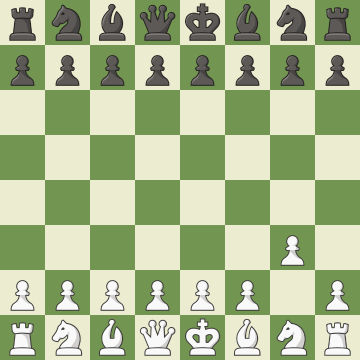

About Us
Welcome to Chess Openings Central, your ultimate resource for mastering popular chess openings. Whether you're an aspiring grandmaster or a casual player, our site provides clear, concise information on a variety of key openings, including the ever-popular e4 and d4, among others. Explore our detailed guides to understand the strategies behind each opening and enhance your game. Dive in and discover the moves that could make all the difference on the chessboard!
King's Pawn Openings (e4)
Caro-Kann Defense
The Caro-Kann Defense is known above all for its solidity. The defining move, 1...c6, is the fourth most popular reply to 1.e4 and nearly twice as common as the number five move. It prepares for 2...d5 without blocking in the light-squared bishop, which is considered the main drawback of its cousin the French Defense (1.e4 e6). A standby for positional players at almost every level, the Caro-Kann was a particular favorite of world champion GM Anatoly Karpov.
French Defense
The French Defense is one of the most popular Black responses to 1.e4. It has consistently been a part of masters' repertoire since the 1800s and one of the favorites of positional players. Usually leading to slower games, this opening is a good choice for players of all levels.
Ruy Lopez
The Ruy Lopez (also known as the Spanish Opening or Spanish Game) is one of the oldest and most analyzed openings in chess history. Most of the world's top players have adopted this rich opening as part of their repertoire, and many of them play it with both colors. Despite having a large amount of theory, it is an opening that players of all levels can enjoy.
Sicilian Defense
The Sicilian Defense is the most popular response to White's 1.e4. Employed by masters and beginners alike, the Sicilian Defense is a reputable and positionally sound opening. Still, the Sicilian is a combative opening that tends to lead to dynamic and sharp positions.
Italian Game
The Italian Game is one of the oldest openings in chess and has been around for centuries. This classical 1.e4 opening can lead to slower and positional games as well as open, tactical battles. Although very common among beginners, the Italian Game is a part of the repertoire of players of every level.
Pirc Defense
The Pirc (prounounced 'Peerts') is a newer, radical kind of opening, in which Black allows White to occupy the center with pawns, and then attempts to counterattack the pawn center and prove it to be over-extended. It is named after the Slovenian Grandmaster Vasja Pirc. The Pirc Defense always involves the fianchetto of the black king's bishop; if the move ...g6 is not played soon, then it is not the Pirc.
Queen's Pawn Openings (d4)
Queen's Gambit
The Queen's Gambit is one of the oldest and most reputable 1.d4 openings for White. Unlike 1.e4 openings, the Queen's Gambit usually evolves into a strategic game rather than an all-out tactical battle. Despite being around for centuries, this opening is still one of the cornerstones of every elite players' repertoire. It's also an excellent choice for beginners and intermediate players.
King's Indian Defense
The King's Indian Defense is a hypermodern aggressive opening for Black as a response for 1.d4. Following hypermodern principles, Black allows White to build a strong pawn center to later counter-attack it. A sharp opening, the King's Indian is not be the best choice for beginners. However, a number of strong grandmasters like Bobby Fischer and Garry Kasparov consistently employed this opening when fighting for a win with the black pieces.
London System
The London System is a popular 1.d4 opening for White which has the reputation of being very solid. The London is considered a system because White can play the same basic setup for almost all of Black's responses. For this reason, the theory on the London is not as extensive as it is for other openings.
Slav Defense
The Slav Defense is a solid opening for Black in response to White's Queen's Gambit (1.d4 d5 2.c4). Black fights for equality against one of White's most popular openings without creating a bad light-squared bishop—one of the downsides of other defenses like the French Defense and the Queen's Gambit Declined.
Grünfeld Defense
The Grunfeld Defense is a cousin of the King's Indian Defense after 1.d4 Nf6 2.c4 g6 3.Nc3 where Black strikes in the center with 3...d5 instead of playing 3...Bg7. In the King's Indian, Black is often playing for a kingside attack, while the Grunfeld is more confrontational in the center. White might get a central pawn mass, but Black plans to strike it down.
Trompowsky Attack
The Trompowsky Attack is an offbeat 1.d4 opening for White as a response to Black's 1...Nf6. A newer opening, the Trompowsky is light on theory but still offers White good attacking chances. It also avoids some of the heavily theoretical lines of other openings. As such, it is a good opening for players of every level.
Other Openings
Bird's Opening
The Bird's Opening is an aggressive flank opening for White. Championed by the English master Henry Bird, this opening is not popular among the masters of today. However, despite its offbeat quality, the Bird's opening is playable and could be a good surprise weapon for club-level players. The opening also has very little theory, so it can be a good option for players who don't want to study heavy theory.
Nimzo-Larsen Attack
The opening move 1.b3 is a quite playable way for White to begin a game. It is named for the great Danish GM Bent Larsen, who was known for his offbeat style. It is sometimes also known as the Nimzowitsch-Larsen or Nimzo-Larsen Attack after Larsen and the Latvian-Danish GM Aron Nimzowitsch.
King's Fianchetto Opening
Sometimes called the Hungarian Opening, 1.g3 prepares to fianchetto the king's-bishop (Bg2), from which spot it will strike through the center. The delay of Nf3 leads to certain subtleties compared to the King's Indian attack.
English Opening
The English Opening is a flank opening where White advances their c-pawn two squares instead of the d- or e-pawns. The English is a highly transpositional opening, meaning that in many cases the game will reach the same position that arises from other openings and through different move orders. The English Opening is most suitable for intermediate and advanced players and demands more understanding of positional concepts.
Polish Opening
The Polish Opening, also known as the Sokolsky or the Orangutan, is the opening 1.b4 by White. Although only the ninth-most popular opening move, it's a respectable option with some devoted followers. Instead of playing in the center, White fights for an advantage on the queenside.
Réti Opening
1.Nf3 develops a piece instead of moving a pawn to begin the game. The knight develops to a good square that controls the center while keeping flexible options with the central pawns. A later d2-d4 move may transpose to a 1.d4 opening (while avoiding certain lines), while a later c2-c4 move might transpose to the English Opening.